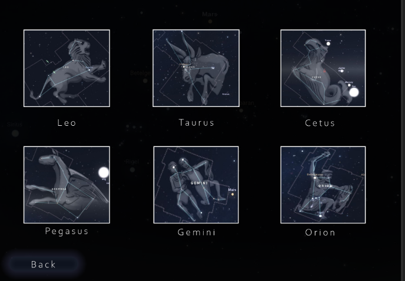
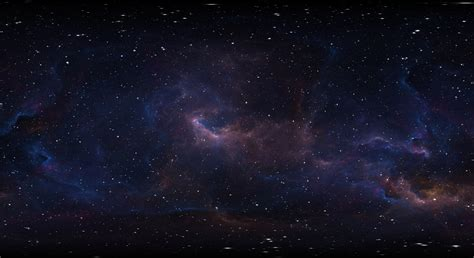
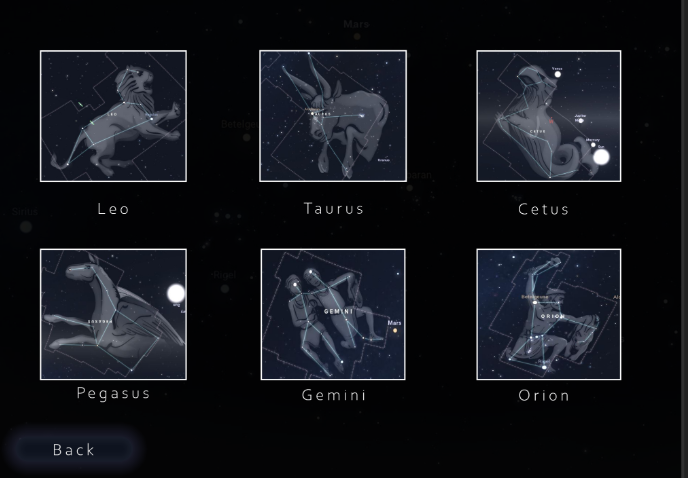
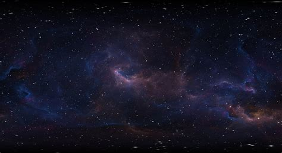

The Concept:
In this third group project, I had been tasked to create an interactive game with a set of briefs to choose from. In this particular project, however, we were set to create a touch screen interactive game to educate children on space and constellations, the idea that they solve a dot-to-dot puzzle, complete a question based off what constellation you had just created, and then move onto the next image, difficulty increasing as you go.
 


